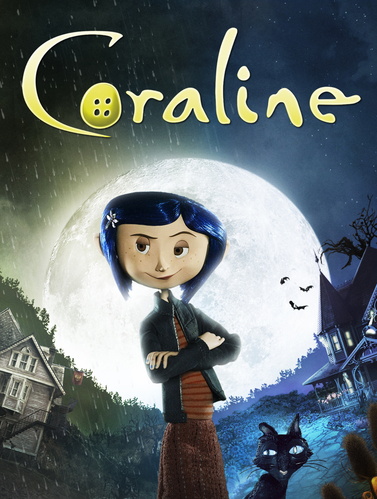

Petya Nikolova
Student @ Le Wagon batch # 41 London
After graduating from Sofia University with a Master of Laws degree and co-founding a consulting company in Sofia, I decided to take a brand new path and moved to London where I decided to learn to code.
Le WagonMy favrourite movies

GoodfellasHenry Hill might be a small time gangster, who may have taken part in a robbery with Jimmy Conway and Tommy De Vito, two other gangsters who might have set their sights a bit higher. His two partners could kill off everyone else involved in the robbery, and slowly start to think about climbing up through the hierarchy of the Mob. Henry, however, might be badly affected by his partners' success, but will he consider stooping low enough to bring about the downfall of Jimmy and Tommy? |
TrainspottingTrainspotting is the tale of Scottish herion junkies and their lives in Glasgow.The motley crue of addicts (Mark Renton, Spud, Alison) unhinged men whose drug is hurting people (Begbie) and the clean ones, (Tommy, Gail, Lizzy.) Mark Renton makes a decision to quit herion and is joined by his friends (one of which just comes off it to prove to Mark he can do it easier than he can.) While off the skag, the friends go through numerous unfavourable events, prompting them to resume their addiction, but a tragic turn of events makes Mark resolve to leave his old life behind and go to work in London, but he soon finds out that he can't alwys leave his past behind that easily... |

CoralineWhen Coraline moves to an old house, she feels bored and neglected by her parents. She finds a hidden door with a bricked up passage. During the night, she crosses the passage and finds a parallel world where everybody has buttons instead of eyes, with caring parents and all her dreams coming true. |